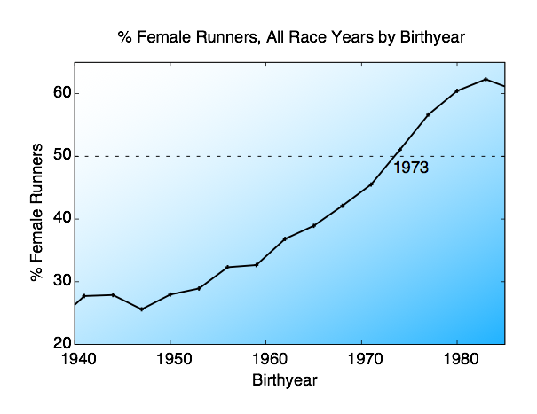

Small data
The final bit of information we learned was that whatever the ratio of women-to-male runners is for a given birthyear, it remains constant throughout the running career of that age group. It would be great for me to tell you what the most probable age is for running, but honestly it is hard to detach that from the explosion of runners I indicated in my earlier post. Here’s that amazing plot (highlighting an amazing cultural shift), one last time.
In summary
Tuesday, April 2, 2013

Some things to note:
-
1.The fact that crossover happens in the early/mid 70s is (coincidentally?) correlated with the first running of the first all female race in the US, the NYRR Mini 10K in 1972. [It should be noted that I’ve excluded all races for which only women or only men race from my statistics, there are several all women races the NYRR holds and that would bias my results.]
-
2.I don’t know why women are running more now than before. Perhaps a cultural shift? Title IX is also passed in 1972 (giving women equal access to sports as men -- especially at the school level.) which is likely to have had an impact on the over all participation of women in sporting events.
-
3. The demographics of NYC may have also shifted. In the late 80s/early 90s NYC was a very different place. I remember growing up hearing stories about the central park jogger for example. Perhaps long distance running was seen as dangerous? Who knows. Either way, I find that this is unlikely to have had such a dramatic effect as what I’ve seen in my data.
-
4.This data only covers NYRR data. I do not know if this would hold true for other running races/groups. I would assume that the trends would roughly correlate, but I can’t say anything for sure.
-
5.Will this trend of increasing women continue? I don’t know. Certainly the data suggests that as runners born later and later enter the field, increasingly more of them will be women. Obviously, this trend can’t go on forever, but it doesn’t seem to be plateauing as of yet. [The idea of these road races approaching 100% female participation is quite amusing though. Imagine all those jerk-y people who say “you run like a girl”... it might actually turn into a compliment.]
-
6.What should the NYRR do about this? I don’t know. Mary Wittenberg, the NYRR president, has already done a lot for women such as increasing the prize money for women to match that of male competitors. I, for my own selfish reasons, would like them to offer smaller sized race shirts (women’s sizes perhaps?) for more of their races. There are plenty of young petite female runners out there and if you want your t-shirts to act as advertising, I suggest you make them fit us properly so we’ll want to wear them running along the Hudson river.